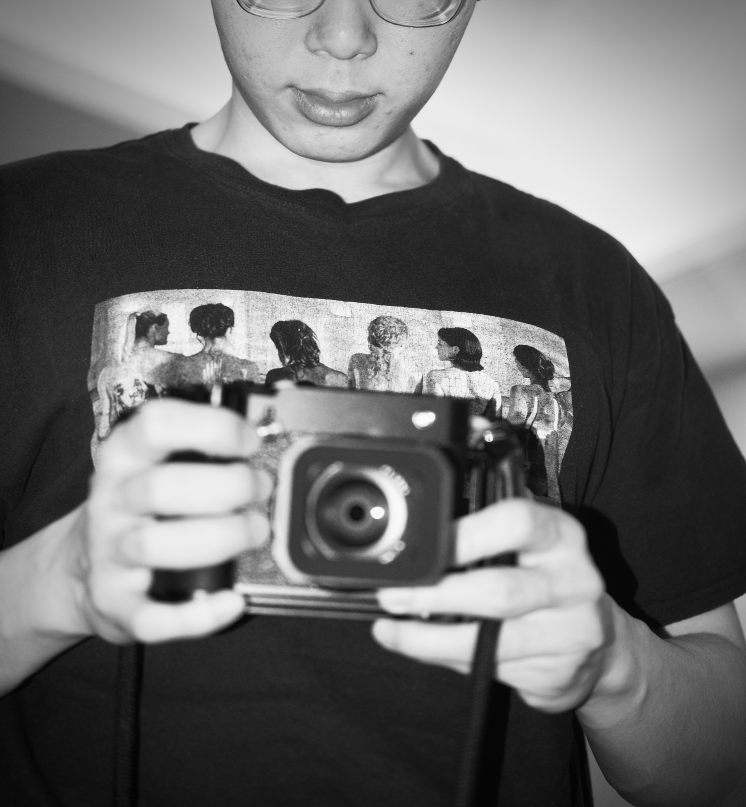

S001
001
摄影，结束的开始
Photography, the Beginning of an End
OC STUDIO / STORIES

这个网站是安放我个人爱好的一处小角落。
2025年3月，我拿起了自己的第一台相机，开始记录身边的世界。作为一名视觉设计师，我习惯通过影像去观察世界。而透过取景器，我试着捕捉并讲述那些正在身边发生的、真实而日常的瞬间。
我的照片很难被整齐地归类。尽管它们来自不同的相机，我还是尽可能将它们整理成了各自独立的主题。
抛开器材、拍摄对象、时间和地点，剩下的只是一双观察的眼睛，以及一双操作相机的手。快节奏的设计文化，常常让我们来不及真正理解事物的形态与意义。这也是我拿起相机的原因：通过真切的视觉感知，慢慢探寻所拍之物的本质。
This website is a little corner for my personal hobbies.
In March 2025, I picked up my first camera and began documenting the world around me. As a visual designer, I’m trained to see the world through imagery. Through the viewfinder, I try to capture and tell the real, everyday moments unfolding around me.
My photographs resist neat categorization. Still, I’ve done my best to group them into distinct themes, even though they were shot on a variety of different cameras.
Strip away the gear, subjects, time and location, and all that remains are a pair of observing eyes and hands that operate the camera. The fast‑paced culture of design often keeps us from fully grasping the true form and meaning of things. That is why I pick up the camera: to slowly trace the essence of my subjects through genuine visual perception.

OCstudio 从那些被我们留意到的事物开始：有人离开后的房间、擦肩而过的面孔、掠过墙面的光，以及久久留在脑海中的形状。
它们大多成为影像。偶尔，也成为设计。
在观察与创造之间。
OCstudio starts with things we notice: a room after someone leaves, a face in passing, light moving across a wall, a shape that lingers.
Most of it ends up as images. Every now and then, it becomes design.
Somewhere between observation and creation.
SCROLL / SELECT A PROJECT
S001
Photography, the Beginning of an End
HAIYANG XIAN · JAPAN · 2025
SCROLL TO READ ↓我总是会在文字的逻辑上耍小聪明，就像我这个人一样，这样的性格特点听起来确实很糟糕，但确实是这样的小毛病滋养了我跳跃多变的思维模式，总会时不时冒出点有意思的想法。
I have a habit of getting a little too clever with the logic of words—much as I do with life. It probably sounds like a terrible character trait, but these little flaws have fed my restless, unpredictable way of thinking. Every so often, something interesting comes out of it.
在最早以前，和大部分人一样，我通过手机拍摄记录生活。通过日积月累的手机屏幕快门，我意识到不去运用设计师的构图能力简直是对我学到的知识的一种浪费，带着愧疚秉承着东亚教育体系的“学以致用”，我尝试去拍摄有构图的内容。
At first, like most people, I documented life with my phone. After countless taps on the shutter button, I began to feel that not using the composition skills I had learned as a designer was a waste of my education. With a little guilt, and the East Asian educational ideal of “putting learning into practice” in mind, I started trying to compose my photographs more deliberately.
在这个期间大概有半年多的时间里，我都在使用dazz，试图用氛围感的滤镜来弥补一些糟糕的构图。
For a little over six months during that period, I used Dazz, hoping its atmospheric filters could make up for some rather poor compositions.


事情的转机是一次旅行。日本的旅行一路从北海道南下东京，再辗转富士和名古屋，我依旧带着手机拍摄着雪景，富士山，街道，神社，几天的旅途心中反复犹豫思考是否要顶着刷爆信用卡的风险去Bic购买一台超优惠率的相机，终于在旅途结束的倒数第二天下定决心买下一台富士X100VI作为我严肃摄影的起点，也很高兴我亲爱的父亲没有因为信用卡的消费记录拿我试问。
The turning point came on a trip to Japan. I travelled south from Hokkaido to Tokyo, then on to Fuji and Nagoya, still using my phone to photograph the snow, Mount Fuji, streets and shrines. Throughout the trip, I kept wondering whether I should risk maxing out my credit card on a camera at Bic Camera, tempted by the favourable exchange rate. On the second-to-last day, I finally bought a Fujifilm X100VI to mark the start of taking photography seriously. I was also very glad that my dear father did not interrogate me about the credit card statement.
实话实说一开始的照片产出是打击人心的，28mm的定焦焦段是有门槛的，一个可以容纳很多视觉信息的画面总会要求你有着比常人更强的视觉语言的理解与组织能力，至少当时的我是这么认为，但我打算我会在后续的更新内容加上我自己对我的设备的一些见解，敬请期待。
Honestly, the first photographs were discouraging. A 28mm prime lens has a learning curve: a frame that takes in so much visual information seems to demand an unusually strong understanding of visual language and an ability to organise it. At least, that was how I felt at the time. I plan to share more of my own thoughts on the equipment I use in future updates. Stay tuned.


总而言之，摄影的开始就是挺稀里糊涂的，但是自始至终都感谢身边人的鼓励和支持。
All in all, my beginning in photography was a little muddled. But through it all, I have been grateful for the encouragement and support of the people around me.